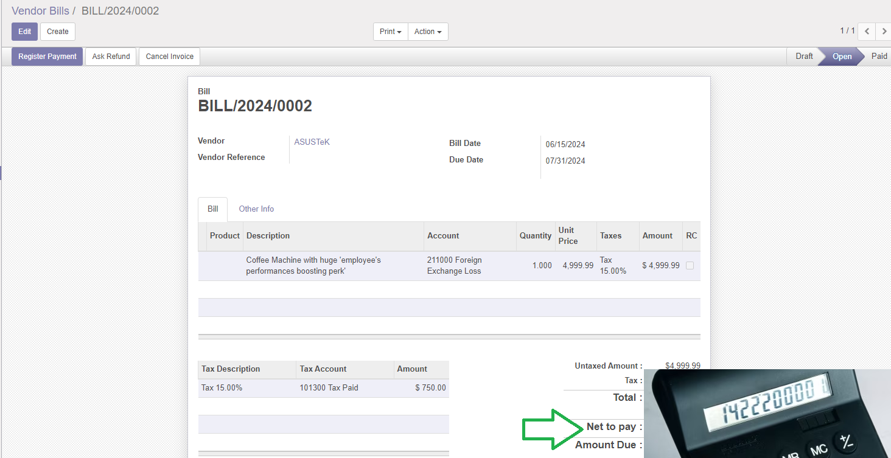

Base account for Italian Localizzation

Base per contabilità italiana






Technical module that supplies some structures usable by other modules like l10n_it_vat_registries and account_vat_period_end_statement
External module can use the field amount_net_pay which is the amount to pay
the invoice. In some cases, the total invoice amount and the amount to pay can be
different; the most common cases are:
The field amount_net_pay is visible just if it is different from Total Invoice
Amount.

Modulo tecnico che fornisce alcune strutture utilizzabili da altri moduli come l10n_it_vat_registries e account_vat_period_end_statement
I moduli esterni possono usare il campo amount_net_pay che contiene l'importo
della fattura da pagare. In alcuni casi fiscali, l'importo della fattira da
pagare differisce dal totale fattura; i casi più comuni sono:
Il campi amount_net_pay è visibile solo se diverso dal totale fattura.
Il modulo può essere usato sia per i documenti passivi che attivi.
Authors | Autori:
Contributors | Partecipanti:
This module is maintained by the SHS_AV s.r.l..
This module is part of l10n-italy project.
Published information on | Informazioni pubblicate: 2024-06-09